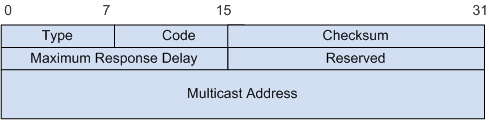
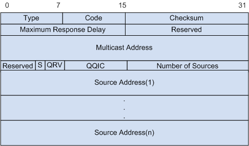
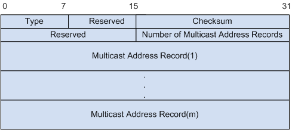
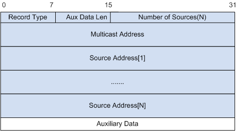
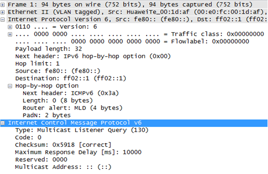
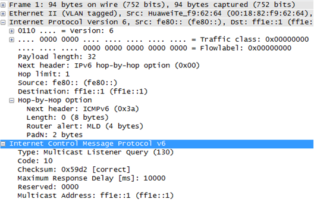
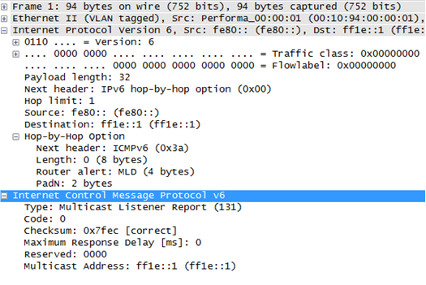

MLD（Multicast Listener Discovery）组播监听者发现协议。MLD和IPv4网络中的IGMP功能类似，用于IPv6路由器发现其直连网段上组播监听者（Multicast
Listener）、建立、维护组成员关系。
现有MLDv1和MLDv2两个版本，MLDv2在MLDv1的基础上增加了对SSM模型的支持。
报文格式
MLD消息是ICMPv6消息的一个子集，封装在IPv6报文中。
图1 MLD报文封装格式
- IPv6报文头的源地址字段为MLD消息发送者的IPv6本地链路地址。
- IPv6报文头的目的地址字段用来标识MLD消息所属的组播组。
- IPv6报文头的Hop Limit字段值为1，表示MLD消息只在本地网段传播。
- 逐跳选项头（Hop-by-Hop Option Header）。其中下一报头（Next Header）字段值为58，表示该报文是ICMPv6消息；路由器告警选项（RTR-ALERT）的值是0x05020000，表明该报文是MLD消息。
- 不同版本的MLD协议，使用不同的消息格式，支持不同的消息类型。
图2 MLDv1消息格式

表1 MLDv1消息格式字段解释
| 字段 |
长度 |
描述 |
| Type |
1字节 |
MLDv1消息类型，有3种取值，如表2所示。 |
| Code |
1字节 |
代码。发送时此字段设置为0，接收时不处理此字段。 |
| Checksum |
2字节 |
标准的ICMPv6校验和，覆盖所有MLD消息以及IPv6首部区域中的伪首部。在计算校验和时，此字段以零计算。发送报文时必须计算校验和并将结果写入此字段。接收报文时首先验证校验和，然后才处理报文。 |
| Maximum Response Delay |
2字节 |
最大响应时间。这个字段只有在查询消息中才有意义。在其他类型的消息中，发送时这个字段被清零，接收时不处理这个字段。 |
| Reserved |
2字节 |
保留位。发送时此字段被清零，接收时不处理此字段。 |
| Multicast Address |
16字节 |
组地址。 |
表2 MLDv1消息类型
| 取值 |
消息类型 |
备注 |
| 130 |
MLDv1普遍组查询消息 |
普遍组查询消息是查询器定期向共享网段内所有主机以组播方式发送的查询消息，用于查询哪些组播组存在成员。封装该消息的IPv6报文头的目的地址字段为FF02::1。组地址字段为全0，表示不指定组播组。 |
| |
MLDv1特定组查询消息 |
特定组查询消息是查询器向共享网段内特定组播组成员发送的消息，用于查询该组播组是否存在成员。封装该消息的IPv6报文头的目的地址字段为被查询的组播组的IP地址，网络中属于该组播组的成员才能识别并响应。组地址字段为被查询的IPv6组播组地址。 |
| 131 |
MLDv1的成员报告消息 |
成员报告消息是主机向组播路由器发送的报告消息，用于申请加入某个组播组或者应答查询消息。封装该消息的IPv6报文头的目的地址字段为主机要加入的IPv6组播组地址，只有网络中的组播路由器和该组成员才能识别并接收。组地址字段为主机要加入的IPv6组播组地址。 |
| 132 |
MLDv1离开消息 |
离开消息是主机主动离开组播组时向组播路由器发送的消息，用于宣告自己离开了某个组播组。封装该消息的IPv6报文头的目的地址字段为FF02::2。组地址字段为主机要离开的IPv6组播组地址。 |
MLDv2有以下几种消息：
- MLDv2查询消息（Type=130）
- MLDv1成员报告消息（Type=131）
- MLDv1离开消息（Type=132）
- MLDv2成员报告消息（Type=143）
图3 MLDv2查询消息

表3 MLDv2查询消息字段解释
| 字段 |
长度 |
描述 |
| Type |
1字节 |
消息类型，该字段取值为130。 |
| Code |
1字节 |
发送时此字段设置为0，接收时不处理此字段。 |
| Checksum |
2字节 |
标准的ICMPv6校验和，覆盖所有MLD消息以及IPv6首部区域中的伪首部。在计算校验和时，此字段以零计算。发送报文时必须计算校验和并将结果写入此字段。接收报文时首先验证校验和，然后才处理报文。 |
| Maximum Response Delay |
2字节 |
主机发送报告消息前允许的最长响应延迟。 |
| Reserved |
2字节 |
保留字段。发送时此字段设置为0，接收时不处理此字段。 |
| Multicast Address |
16字节 |
组地址。- 普遍组查询消息中，此字段设置为0。
- 特定组查询消息中，此字段设置为待查询的组播地址。
- 特定源-组查询消息中，此字段设置为待查询的组播地址。
|
| Reserved |
4比特 |
保留字段。发送时此字段设置为0，接收时不处理此字段。 |
| S(Suppress Router-Side Processing) |
1比特 |
标识位，表示路由器接收到查询消息后是否对定时器更新进行抑制。 |
| QRV(Querier’s Robustness Variable) |
3比特 |
查询器健壮系数。 |
| QQIC(Querier’s Query Interval Code) |
1字节 |
查询器查询间隔。 |
| Number of Sources |
2字节 |
组播源个数。- 普遍组查询消息中，此字段设置为0。
- 特定组查询消息中，此字段设置为0。
- 特定源-组查询消息中，此字段表示查询消息中包含的源地址个数。
|
| Source Address( i ) |
16字节 |
组播源地址列表。- 普遍组查询消息中，此字段设置为0。
- 特定组查询消息中，此字段设置为0。
- 特定源-组查询消息中，此字段表示指定查询的组播源地址（i＝1,2,…,n, n表示源地址个数）。
|
图4 MLDv2成员报告消息

表4 MLDv2成员报告消息字段解释
| 字段 |
长度 |
描述 |
| Type |
1字节 |
消息类型，该字段取值为143。 |
| Reserved |
1字节 |
发送时此字段设置为0，接收时不处理此字段。 |
| Checksum |
2字节 |
标准的ICMPv6校验和，覆盖所有MLD消息以及IPv6首部区域中的伪首部。在计算校验和时，此字段以零计算。发送报文时必须计算校验和并将结果写入此字段。接收报文时首先验证校验和，然后才处理报文。 |
| Reserved |
2字节 |
保留字段。发送时此字段设置为0，接收时不处理此字段。 |
| Number of Multicast Address Record |
2字节 |
组播地址记录的个数。 |
| Multicast Address Record (i) |
变长 |
组播地址记录，表示主机在接口上侦听到的每个组播地址信息，包括记录类型、组播地址、源地址等。（i＝1,2,…,m,
m表示组播地址记录的个数） |
图5 Multicast Address Record格式

| 字段 |
长度 |
说明 |
| Record Type |
1字节 |
记录类型：- MODE_IS_INCLUDE，表示接口和指定组之间的关系是INCLUDE，源地址列表中会包含的源。该类型的Record不会包含空的源列表。
- MODE_IS_EXCLUDE，表示组播组与源列表之间的对应方式为EXCLUDE，即接收从指定源列表以外的组播源发往该组播组的数据。
- CHANGE_TO_INCLUDE_MODE，表示主机的组播组与源列表之间的对应方式由EXCLUDE转换到INCLUDE。
- CHANGE_TO_EXCLUDE_MODE，表示主机的组播组与源列表之间的对应方式由INCLUDE转换到EXCLUDE。
- ALLOW_NEW_SOURCES，表示在现有的基础上，还希望从某些组播源接收组播数据。如果当前对应关系为INCLUDE，则向现有源列表中添加某些组播源；如果当前对应关系为EXCLUDE，则从现有源列表中删除某些组播源。
- BLOCK_OLD_SOURCES，表示在现有的基础上，不再希望从某些组播源接收组播数据。如果当前对应关系为INCLUDE，则从现有源列表中删除某些组播源；如果当前对应关系为EXCLUDE，则向现有源列表中添加某些组播源。
|
| Aux Data Len |
1字节 |
在组播地址Record中附加Auxiliary Data的长度。 |
| Number of Sources |
2字节 |
本记录中包含的源地址数量。 |
| Multicast Address |
16字节 |
组地址。 |
| Source Address |
16字节 |
组播源地址。 |
| Auxiliary Data |
变长 |
组播地址Record的附加信息。 |
报文示例
图6 MLD Membership Query (General) message

图7 MLD Membership Query (Special) message

图8 MLD Membership Report message

参考标准
| 标准 |
描述 |
| RFC 2710 |
Multicast Listener Discovery (MLD) for IPv6 |
| RFC 3810 |
Multicast Listener Discovery Version2(MLDv2) for IPv6 |